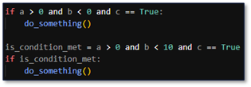

Code Formatting & Style
- Be consistent throughout the project
- Ex. Names: Eqmt vs. Equipment
- Ex. Writing style: snake_case, camelCase, PascalCase, etc.
- Do not intermingle constants in an expression, and avoid hard coding values
- Ex. Do not do x = ten + 5, instead define what 5 is
- Ex. x = 10 + 5 is fine if constants are not mixed with other variables
- Parameterization - values should go into a variable (even if it is not used multiple times). This way, changes to the value only need to be changed in one place. Ideally this variable should be placed at the top of the code or someplace easily accessible, so someone does not have to go hunting through the code just to find it
- Use whitespace and indentation to make code look neat and organized
- Ex. x + y, func(a, b, c)
- Consider putting each list item on its own line if it gets too wide (in function calls, lists, json, etc.)
- Never mix spaces and tabs
- Use automated tools to ensure consistent formatting with multiple developers
- It also makes the function harder to read and probably means the function is doing more than one task
- If you have multiple arguments, you can pass them as one object by using a dictionary or use default values
- Avoid excessive nesting of code blocks to ensure readability and maintainability
- Ex. Use guard clauses to handle the exceptional cases first
- Ex. Use guard clauses to handle the exceptional cases first
- Extract complex boolean expressions into variables. The variable name will then describe what the chunk of
code is doing. This helps understand the code when you break it up into intermediate parts
